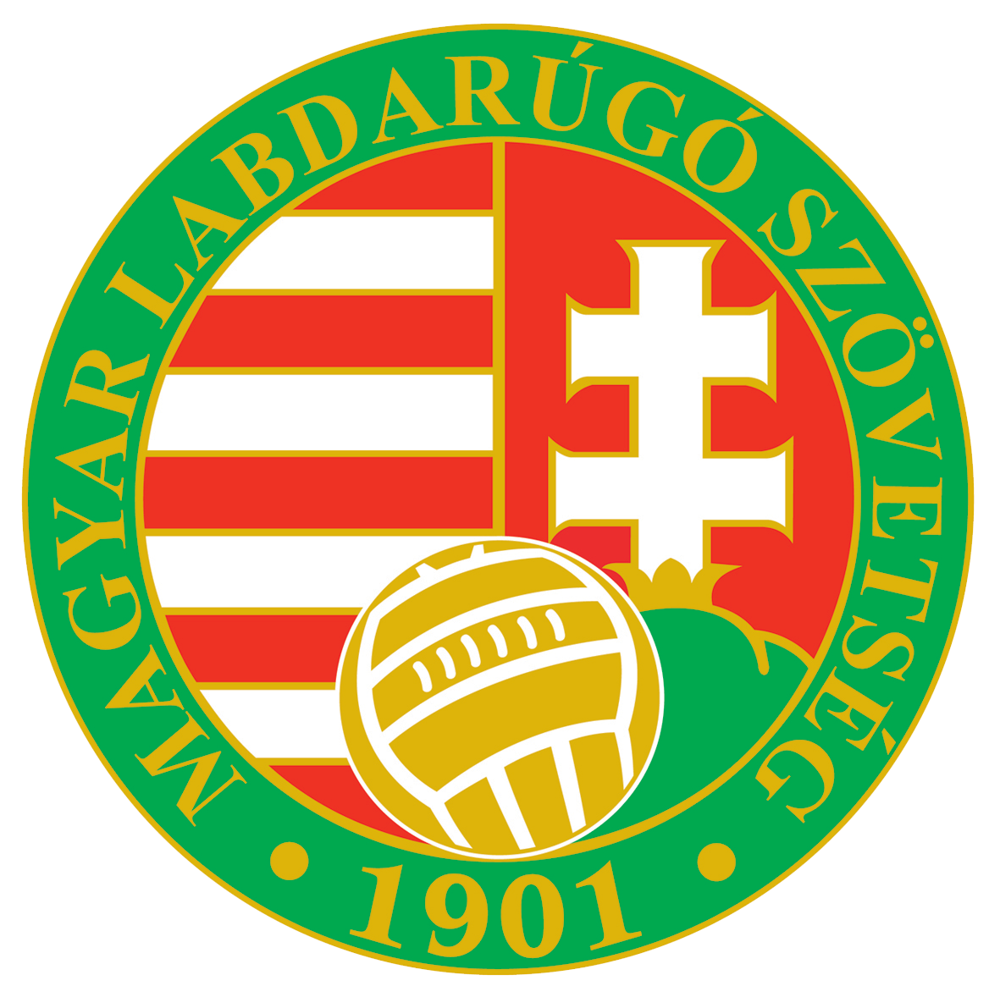
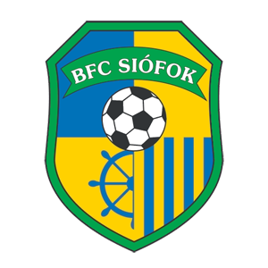
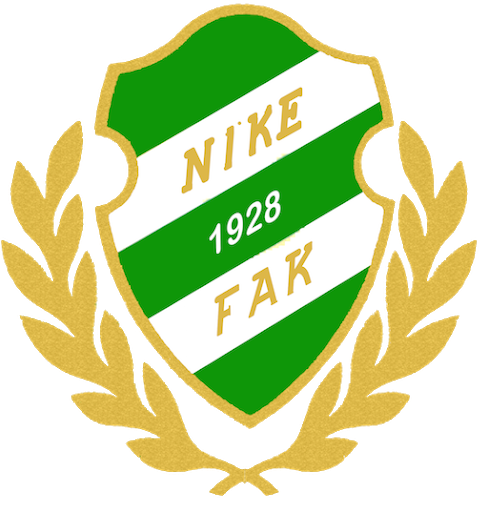

Labdarúgás
Gyerek korom óta focizom.Kezdetben még általános iskolában az iskolai edzésekre jártam, később azonban igazolt játékos lettem a Fűzfői Atlétikai Klubbnál. Mikor 8.osztályos lettem megkeresett egy másik csapat, hogy szeretnék ha náluk játszanék, így kerültem siófokra.A Siófoki Bányász SE-nél fociztam az egész gimnáziumi éveimben, rengeteg élményt szereztem ezidő alatt, valamint sikerben is volt részem. Többször bajnokásgot nyertünk, valamint az utolsó teljes bajnokságomban a szezon játékosának választottak.
  